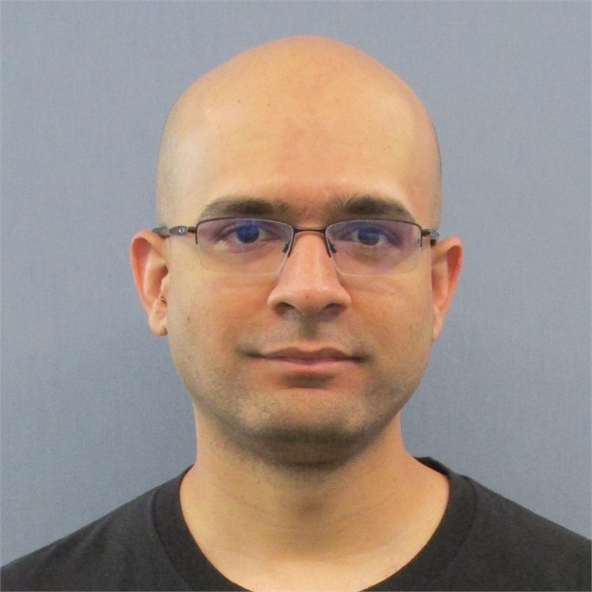

01
Higgs Physics
Searching for Higgs-boson pair production in the bbττ final state with the ATLAS experiment.
Explore →I am an experimental particle physicist and postdoctoral researcher at Southern Methodist University in Dallas, working with the ATLAS experiment at CERN.

Physics · Instrumentation · Computing
Searching for Higgs-boson pair production in the bbττ final state with the ATLAS experiment.
Explore →Testing and validating custom high-speed electronics for the upgraded ATLAS pixel detector.
Explore →Precision measurements of neutral B mesons using data from the ATLAS experiment.
Explore →My work moves between fundamental particle physics, detector instrumentation, computing, and emerging technologies.
I am particularly interested in projects where sophisticated technology enables us to ask better scientific questions — whether that means reconstructing rare Higgs-boson events, building detector electronics, or developing new tools for research and education.
Research profiles and professional links
Southern Methodist University
enarayanan@smu.edu
Personal
n.easwaranand@gmail.com